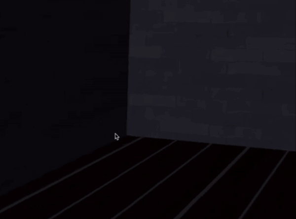

Jueun Kim김주은
I am a B.S. student in Computer Science at Yonsei University, with a double major in Mathematics.
My research interests are in 3D reconstruction, visual SLAM, and vision-based robotics.
I have worked as a research intern at KAIST AI and Yonsei AI, and as a visiting scholar at Purdue University
on 3D visual implicit RGB-SLAM.
Education
Yonsei University
B.S. in Computer Science
Double Major in Mathematics
March 2021 - Present
Cumulative(Major) GPA: 4.07(4.1)/4.3
Research Focus
3D reconstruction
Visual SLAM
3D vision-based robotics
Computer vision and embodied perception
Experience
Jun 2025 - Present
Research Intern
KAIST AI, advised by Prof. Chulhee Yun
Jul 2024 - Aug 2024
Research Intern
Yonsei AI, advised by Prof. Youngwoon Lee
Jun 2023 - Sep 2023
Research Intern
KAIST AI, advised by Prof. Eunho Yang
Worked on 3D video generation using 2D stable diffusion and neural implicit reconstruction.
Dec 2023 - Feb 2024
Visiting Scholar
Purdue University
Research on 3D visual implicit RGB-SLAM.
News
2025
Started a research internship at KAIST AI.
2024
Visited Purdue University for RGB-SLAM research and built Meetable and WakeUpFromNightmare.
2023
Worked on 3D video generation research at KAIST AI.
Selected Projects
A few projects spanning front-end engineering, interactive graphics, and 3D vision research.

|
Meetable
Front Engineer
Developed a website for scheduling appointments among many people and managing a personal calendar.
Visit site
React
JavaScript
CSS
|
|

|
WakeUpFromNightmare
OpenGL-based horror game where the player escapes a locked room after finding three keys.
Demo video
OpenGL
C++
Game Development
|

|
RGB-SLAM with Depth Estimation
Worked on dense visual SLAM and modified an RGB-D SLAM pipeline into RGB-only visual SLAM without requiring depth input.
Python
PyTorch
SLAM
3D Vision
|
Awards & Honors
2024-1
Highest Honor (Top 1%), Yonsei University
2023-2
Honor (Top 10%), Yonsei University
2022-1
Great Honor (Top 3%), Yonsei University
2022-2025
Merit-based Scholarship, Yonsei University
Coursework & Skills
Relevant Coursework
Computer Vision, Machine Learning, Deep Learning, Reinforcement Learning
Linear Algebra, Natural Language Processing, Mathematical Problems in Deep Learning
Software Engineering, Operating Systems, Computer Graphics, Architecture
Technical Skills
Languages: Python, C/C++, SQL, JavaScript, HTML/CSS
Frameworks: PyTorch, TensorFlow, React, OpenGL